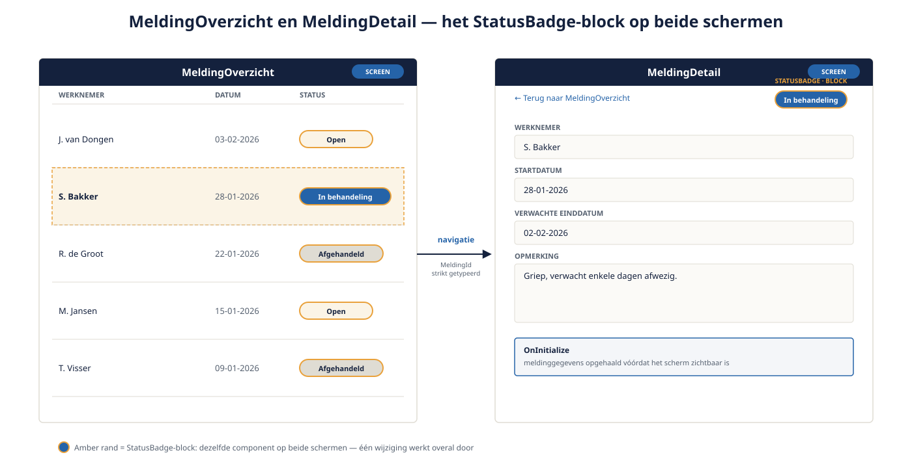

Deel 5 — Interface, screen lifecycle en navigatie
Slidedeck · Ductus-cursus OutSystems · Niveau 1 — Fundament · deel 5 van 30 · 13 slides
Slide 1 — Title: OutSystems: Fundament
OutSystems: Fundament
Deel 5 — Interface, screen lifecycle en navigatie
Slide 2 — Bullets: Screens en blocks
Screens en blocks
- Screen = pagina (
MeldingOverzicht,MeldingDetail) - Block = herbruikbaar interface-onderdeel (
StatusBadge) - Vuistregel: twee keer hetzelfde bouwen = signaal voor een block

Slide 3 — Section: De screen lifecycle
De screen lifecycle
Slide 4 — Bullets: Drie momenten
Drie momenten
1. OnInitialize — vóórdat de gebruiker iets ziet
2. Interactie-events — OnClick, OnChange
3. OnDestroy — bij verlaten van het scherm
Slide 5 — Statement: Dataophaling hoort bij OnInitialize.
Dataophaling hoort bij OnInitialize.
Niet bij een klik.
Slide 6 — Opdracht: Opdracht 5.1 — Screen, block of event?
Opdracht 5.1 — Screen, block of event?
Drie elementen van Verzuimmeldingen.
→ Werkboek 5.1
Slide 7 — Opdracht: Baan A / Baan B
Baan A / Baan B
A — MeldingOverzicht + MeldingDetail + StatusBadge in Service Studio
B — Zelfde opbouw in ODC Studio
→ Werkboek, eigen baan
Slide 8 — Section: Navigatie
Navigatie
Slide 9 — Bullets: Expliciet en strikt getypeerd
Expliciet en strikt getypeerd
- Geen handmatige routes
- Parameters strikt getypeerd (geen tekst waar een getal hoort)
- Platform genereert URL-structuur automatisch
Slide 10 — Table: Interface-laag: O11 versus ODC
Interface-laag: O11 versus ODC
| O11 | ODC | |
|---|---|---|
| UI-varianten | Traditional Web + Reactive Web | Alleen reactief |
| Keuze bij aanmaken | Expliciet | Niet nodig |
| Deze cursus kiest | Reactive Web | (standaard) |
Slide 11 — Opdracht: Reflectieopdracht 5.2
Reflectieopdracht 5.2
Data ophalen via een "Ververs"-knop i.p.v. OnInitialize — wat gaat mis?
→ Werkboek 5.2
Slide 12 — Bullets: Kernpunten deel 5
Kernpunten deel 5
- Screens = pagina's, blocks = herbruikbaar — DRY tastbaar in het platform
- OnInitialize voor dataophaling, niet interactie-events
- Navigatie: expliciet, strikt getypeerd
- O11: keuze Traditional/Reactive; ODC: standaard reactief
Slide 13 — Section: Volgende deel: Aggregates en data ophalen
Volgende deel: Aggregates en data ophalen